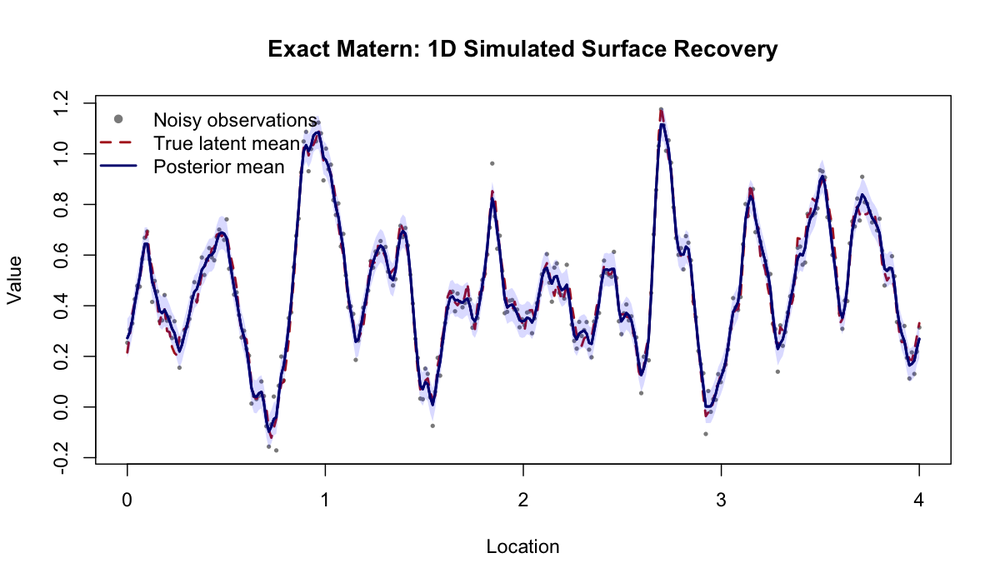
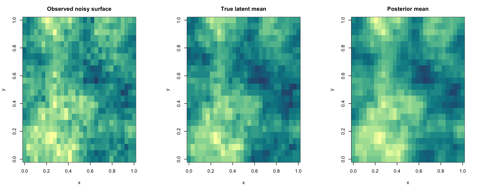
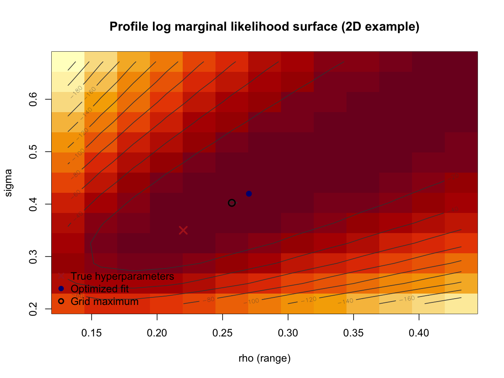

Mean surface RMSE drops from 0.0326 to 0.0322, while mean
correlation rises from 0.9898 to 0.9941.
The range and sigma boxplots are the main convergence diagnostic
here: with increasing domain, they should tighten around the truth if
the EB objective is behaving sensibly.
These results show that surface recovery improves strongly with
sample size in the exact-model setting, but they are not a formal proof
of asymptotic consistency.
Parameter-Recovery Summary
(2D)
nx
ny
n
mean_est_range
sd_est_range
mean_est_sigma
sd_est_sigma
mean_abs_err_range
mean_abs_err_sigma
mean_surface_rmse
mean_surface_corr
30.0000
24.0000
720.0000
0.2422
0.0141
0.3613
0.0289
0.0222
0.0204
0.1108
0.9523
36.0000
28.0000
1008.0000
0.2164
0.0128
0.3545
0.0282
0.0091
0.0199
0.0994
0.9612
At the larger 2D grid size (n = 1008), the mean fitted range is
0.2164 versus truth 0.2200, and the mean fitted sigma is 0.3545 versus
truth 0.3500.
Mean 2D surface correlation is 0.9523 at n = 720 and 0.9612 at n =
1008.
The larger 2D noise level makes the observed surface materially
rougher than the latent truth, so the posterior mean comparison is now
more informative than in the earlier low-noise example.
Surface-Recovery Examples
1D Example Metrics
surface_rmse
surface_corr
est_range
est_sigma
est_beta
0.0309
0.9926
0.1799
0.2626
0.4718
Figure:

1D Matern validation figure
2D Example Metrics
n
surface_rmse
surface_corr
est_range
est_sigma
est_beta
true_range
true_sigma
true_beta
720.0000
0.1078
0.9731
0.2701
0.4198
0.2191
0.2200
0.3500
0.2000
Figure:

2D Matern validation figure
Profile
Marginal-Likelihood Surface (2D Example)
true_range
true_sigma
fitted_range
fitted_sigma
grid_max_range
grid_max_sigma
profiled_beta_at_true
profiled_beta_at_fit
profiled_beta_at_grid_max
loglik_at_true
loglik_at_fit
loglik_at_grid_max
gap_true_to_grid_max
gap_fit_to_grid_max
0.220000
0.350000
0.270113
0.419786
0.257075
0.402357
0.222260
0.219046
0.219869
-41.486863
-39.345130
-39.436797
2.050066
-0.091667
Figure:

2D profile marginal
likelihood
Interpretation:
The fitted point is at (rho, sigma) = (0.2701, 0.4198), while the
true point is (0.2200, 0.3500).
The profile log-likelihood gap from the true point to the grid
maximum is 2.0501.
The fitted point is slightly above the coarse grid maximum by
0.091667 log-likelihood units, which is expected because the optimizer
is continuous while the plotted surface is evaluated on a finite
grid.
Marginal-Likelihood Check
param_id
range
sigma
beta0
exact_loglik
dense_loglik
abs_diff
1.00000000
0.20000000
0.40000000
0.00000000
-37.94774676
-37.94774676
0.00000000
2.00000000
0.30000000
0.70000000
0.50000000
-29.94955707
-29.94955707
0.00000000
3.00000000
0.12000000
0.25000000
-0.20000000
-59.05153759
-59.05153759
0.00000000
4.00000000
0.18000000
0.55000000
0.30000000
-26.54344204
-26.54344204
0.00000000
5.00000000
0.26000000
0.35000000
-0.10000000
-54.43204647
-54.43204647
0.00000000
Maximum absolute difference between the package’s exact marginal
likelihood and the dense Gaussian calculation: 5.68434e-14.
This numerical agreement is the strongest direct check that the
current exact marginal-likelihood implementation is algebraically
correct for the tested cases.
Notes
During this validation pass, a log-determinant bug in
.compute_logdet_spd() was found and fixed before finalizing
the results.
The hyperparameter-recovery experiment is intentionally based on
data simulated from the package’s own exact Matern latent-field model,
so it checks internal statistical and numerical coherence rather than
external model robustness.